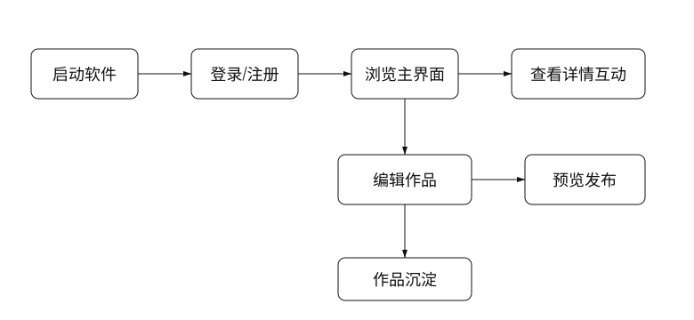
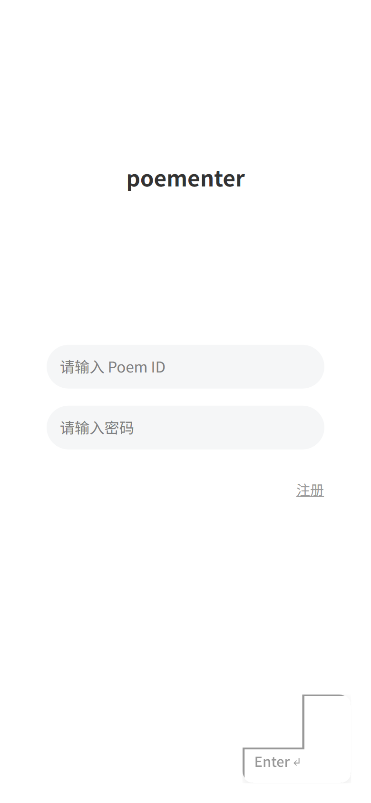
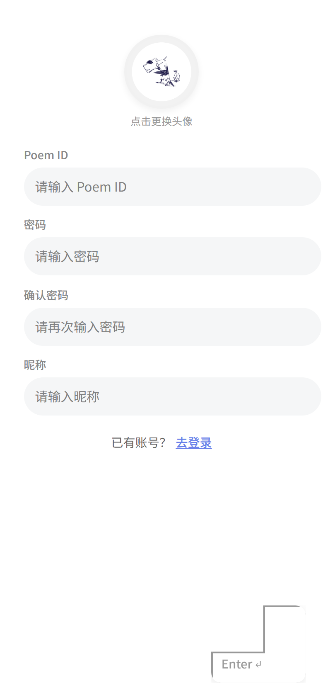
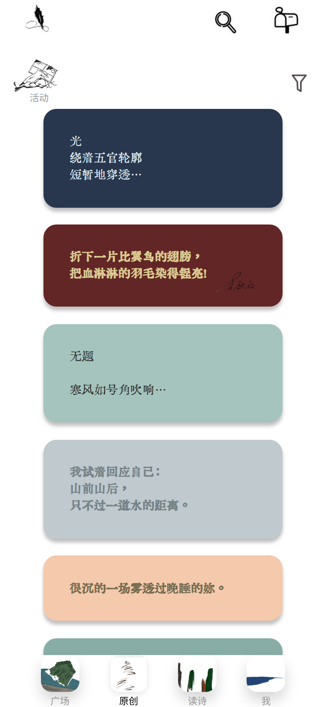
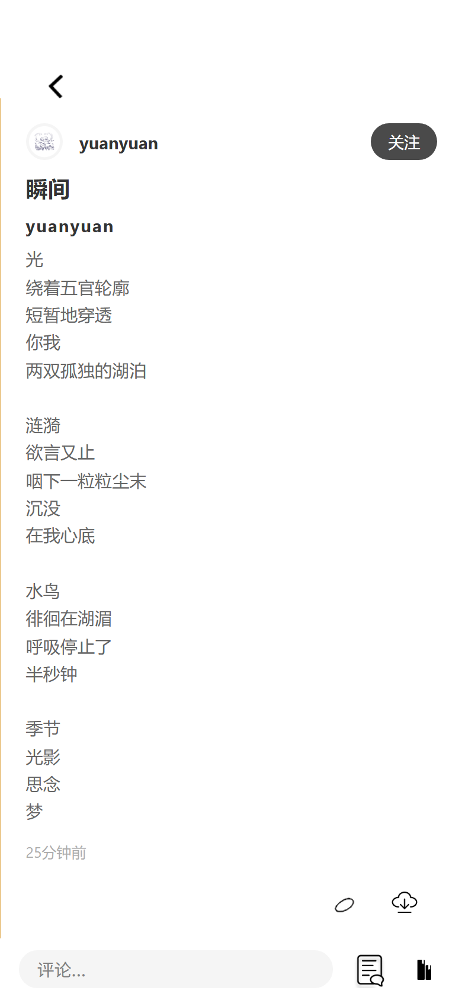
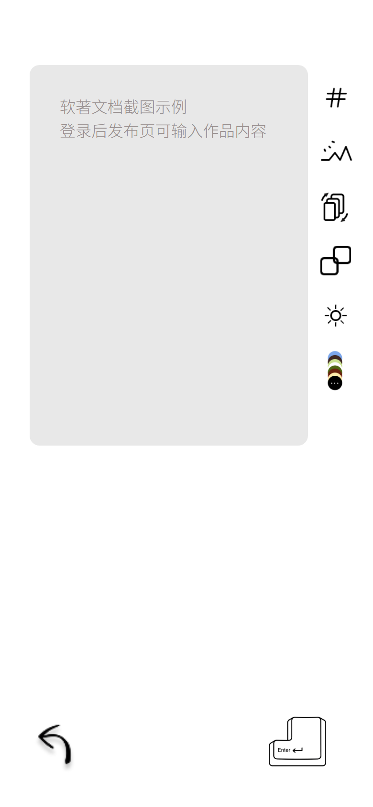
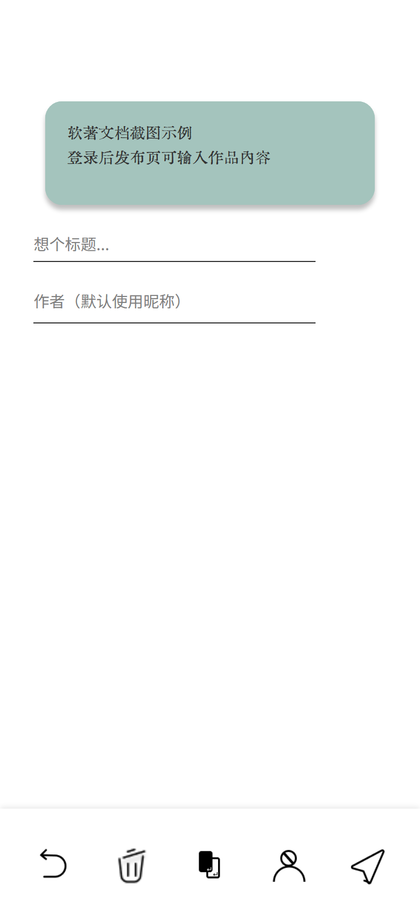
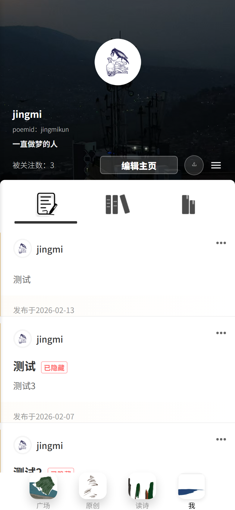
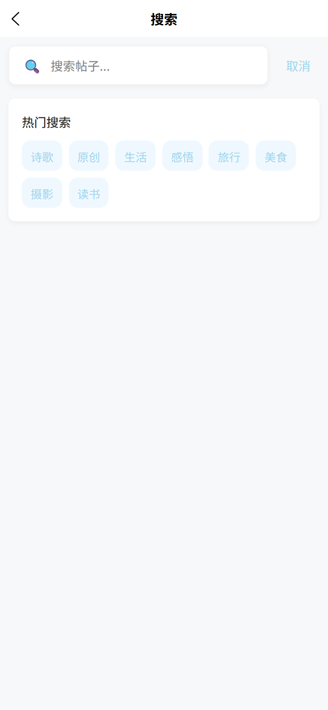

| 项目 | 内容 |
|---|---|
| 软件名称 | 回车键Poementer软件 |
| 文档名称 | 操作手册 |
| 文档版本 | V1.0 |
| 适用对象 | 普通用户、内容创作者、运营管理员、软件登记审查人员 |
| 适用端 | 微信小程序、H5、App |
| 编制日期 | 2026-04-26 |
回车键Poementer软件是一款面向诗歌创作、作品展示、评论互动、作品集沉淀与活动运营的多端软件。用户可以在软件内登录账号、浏览广场内容、查看原创诗歌、发布诗歌或讨论、参与点赞评论、维护个人资料、管理作品集与收藏夹。
本手册以普通用户完整使用流程为主线，覆盖“启动软件、登录注册、主界面浏览、作品详情互动、作品发布、个人中心管理、搜索与消息”等主要功能。截图为依据当前界面结构整理的清晰操作截图，用于展示功能入口、按钮位置和页面操作顺序。

| 情况 | 处理方式 |
|---|---|
| 首次使用 | 建议先注册账号，后续可跨端保存作品和互动记录 |
| 网络较慢 | 等待加载完成后重试，公开内容可在部分场景下继续浏览 |
| 重复打开 | 软件可能跳过启动动画，直接进入主页面 |

微信小程序端可使用微信授权登录；H5 或 App 可按已配置能力使用账号密码、GitHub OAuth 或手机号相关登录能力。第三方登录成功后，软件会绑定用户标识，并把用户资料、关注、作品和互动数据归入同一账号。


| 区域 | 功能说明 |
|---|---|
| 顶部搜索入口 | 搜索作品、作者、标签和讨论内容 |
| 消息入口 | 查看点赞、评论、关注等消息通知 |
| 活动入口 | 查看近期活动和活动作品 |
| 筛选入口 | 对广场或原创列表进行内容类型筛选 |
| 内容列表 | 展示诗歌、讨论、拼贴诗等内容卡片 |
| 底部导航 | 在广场、原创、读诗、我之间切换 |
| 导航项 | 操作结果 |
|---|---|
| 广场 | 查看推荐、关注、讨论等综合内容 |
| 原创 | 查看原创诗歌列表，支持筛选和进入发布 |
| 读诗 | 查看精选阅读内容、发现页和活动相关内容 |
| 我 | 进入个人中心，管理资料、作品、收藏和消息 |

| 操作 | 步骤 | 结果 |
|---|---|---|
| 点赞 | 点击作品下方 Like 或爱心按钮 | 页面即时显示点赞状态，服务端保存点赞记录 |
| 评论 | 点击评论入口，在输入框填写内容并提交 | 评论追加到作品详情页，并触发作者消息 |
| 收藏 | 点击 Favorite 或收藏入口，选择收藏夹 | 作品进入个人收藏夹，后续可在个人中心查看 |
| 分享 | 点击 Share 入口 | 按端能力生成分享链接、分享卡片或图片 |
未登录用户可浏览公开内容；当执行点赞、评论、收藏、关注、发布等需要身份的操作时，软件会提示用户先登录或注册。

| 功能 | 操作说明 |
|---|---|
| 输入正文 | 在编辑区直接输入诗歌、讨论文字或组诗段落 |
| 添加图片 | 点击图片工具，选择本地图片，软件上传至云存储 |
| 设置标签 | 点击标签工具，选择已有标签或输入自定义标签 |
| 切换模式 | 在诗歌、讨论、组诗等模式之间切换 |
| 设置样式 | 选择背景色、字体色或高光样式，用于作品卡片展示 |


| 功能 | 操作方式 |
|---|---|
| 作品集 | 进入作品集列表，新建文件夹或查看已发布作品 |
| 收藏夹 | 查看收藏作品，可按文件夹整理 |
| 我的点赞 | 查看已点赞过的作品 |
| 关注与粉丝 | 查看关注用户与粉丝列表，并可进入用户主页 |
| 消息中心 | 查看评论、点赞、关注、系统通知等消息 |
| 屏蔽用户 | 管理已屏蔽用户，减少不希望看到的内容 |

后台页面面向管理员开放，主要用于活动管理、活动作品管理、帖子审核、诗人资料维护、反馈列表查看和密码找回辅助。普通用户不会在主界面直接看到后台入口。
| 管理功能 | 功能说明 |
|---|---|
| 活动管理 | 新建、编辑、下架活动 |
| 活动帖子 | 查看活动参与作品，处理违规或异常内容 |
| 帖子管理 | 管理公开内容、处理删除和可见性 |
| 反馈管理 | 查看用户反馈，跟进问题 |
| 诗人管理 | 维护诗人信息和展示资料 |
| 异常现象 | 处理建议 |
|---|---|
| 登录失败 | 检查 Poem ID 和密码；确认网络正常后重试 |
| 图片上传失败 | 更换网络或压缩图片后重新上传 |
| 发布失败 | 检查内容是否为空、图片是否上传完成、内容是否通过审核 |
| 列表加载慢 | 下拉刷新或重新进入页面；缓存会在后台更新 |
| 消息未及时刷新 | 进入消息页后下拉刷新，或重新打开软件 |
本操作手册与《回车键Poementer软件设计开发说明书》配套提交：操作手册用于证明软件可操作流程，设计开发说明书用于说明软件结构、功能模块、接口、流程、数据和运行设计。源程序提交稿另以 A4 竖版、白底黑字、每页 50 行、共 60 页方式生成。